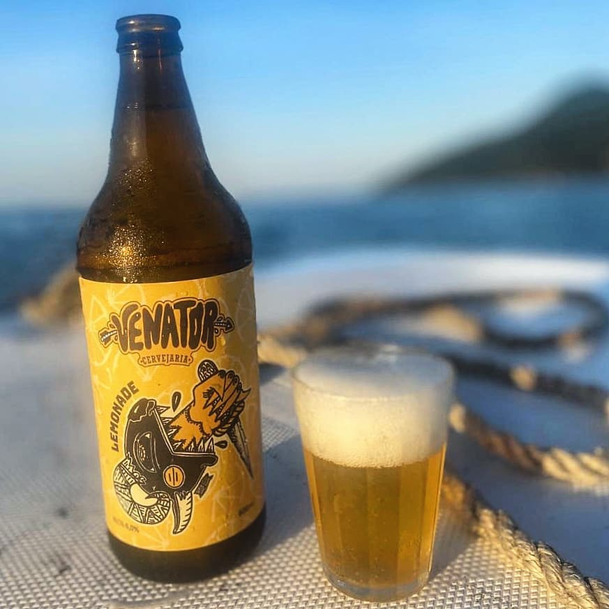

Lemonade - Witbier
Cerveja artesanal estilo Witbier feita com Limão Siciliano e Alecrim para um toque extra de sabor. De corpo leve e refrescante, como um dia de verão, ideal para se tomar antes do meio-dia sem na peso na consciência.
Ilustrador: Old Boy
Patrick Antunes produz trabalhos autorais e assina como Old Boy, já teve o prazer de trabalhar com bandas e artistas, nacionais e internacionais. E segue participando do atual cenário de publicações independentes de São Paulo.

 Entrar em contato
Entrar em contato